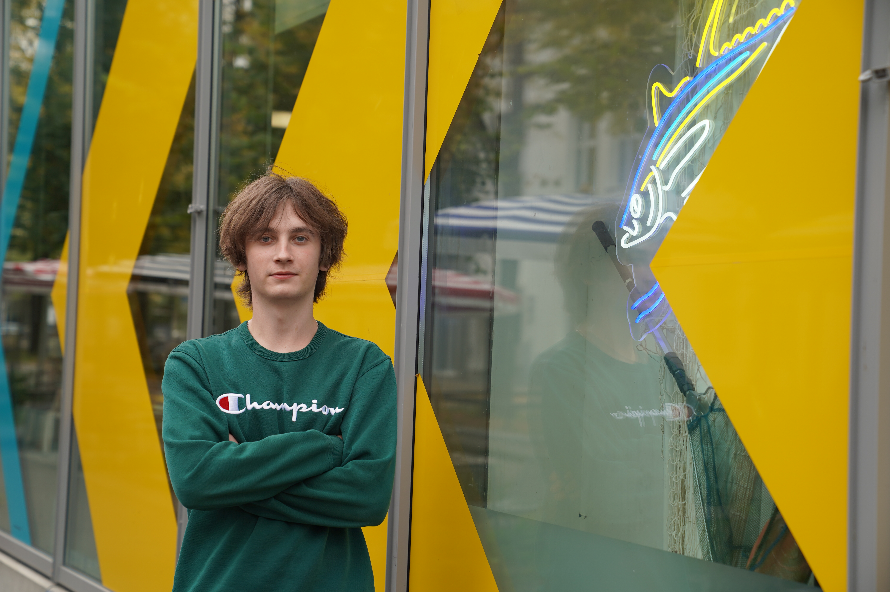

Ich bin Yarik.
Während den Sommerferien 2026 habe ich mich entschieden, dass ich als Informatiker arbeiten möchte, weil es mich interessiert, wie die Computerwelt funktioniert.
Hier siehst du meine bisherigen Schritte...
Während den Sommerferien 2026 habe ich mich entschieden, dass ich als Informatiker arbeiten möchte, weil es mich interessiert, wie die Computerwelt funktioniert.
Hier siehst du meine bisherigen Schritte...